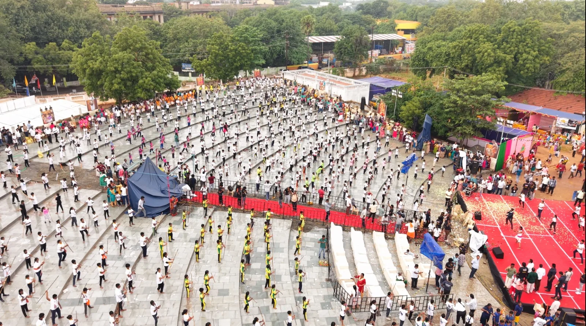
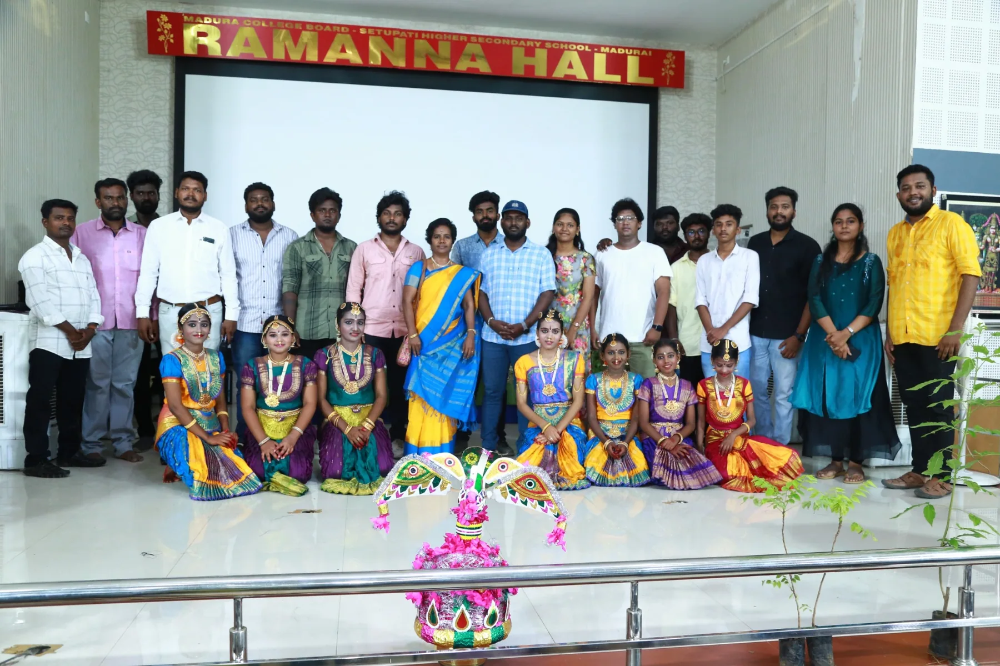
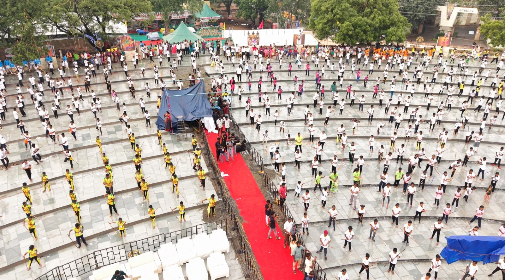
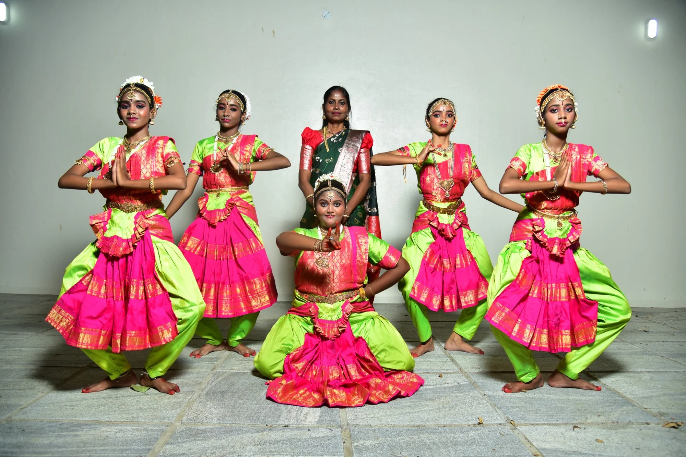
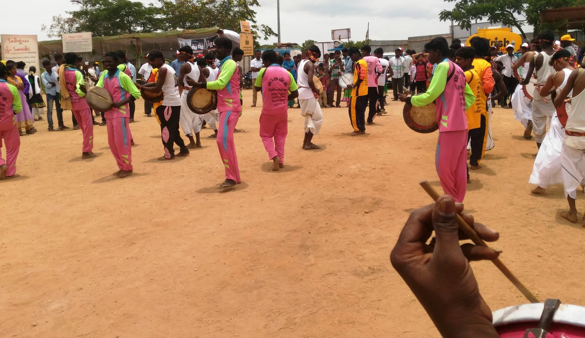
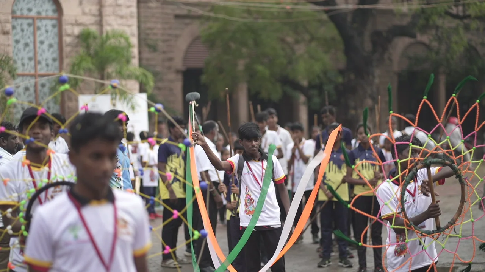
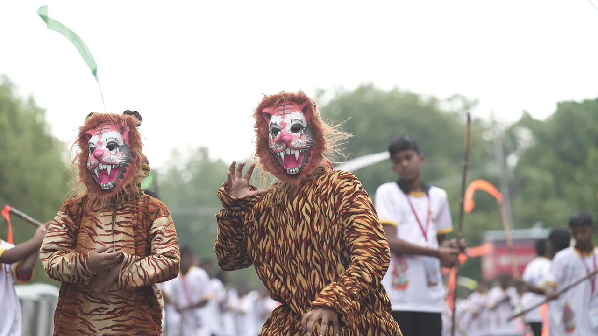

Strength in numbers
A broad view of students taking part in a coordinated outdoor demonstration.

YSCDS Book of World Records is an initiative of the Youth Sports and Cultural Development Society. We bring attention to meaningful accomplishments and the traditions that shape them.
From Silambam practice grounds to dance stages, community music and student milestones, our event photographs reflect the energy of people learning, performing and celebrating together.
Real performances, real participation and real moments from the YSCDS photo collection.
Silambam is a traditional Tamil martial art grounded in rhythm, alertness, balance and control. Students build discipline through regular practice and organised group demonstrations.

SILAMBAM / GROUP DEMONSTRATIONCulture grows when people gather, practice and celebrate. Explore glimpses of the events and communities in our collection.

A broad view of students taking part in a coordinated outdoor demonstration.

Young dancers express tradition through costume, posture and performance.

Traditional percussion brings movement and energy to community gatherings.

Decorative displays and youth participation add vibrancy to cultural processions.

Folk characters and performance traditions create memorable moments for young audiences.
Celebrating documented moments of recognition, students, communities and the people who encourage their progress.
Photographs document recognition moments. Specific record titles, award details, dates and verification status will be added only when confirmed.
Explore Excel Results ↗Browse real photographs from student performances, folk art, cultural gatherings and recognition events.
A clear five-stage approach to documenting a meaningful achievement.
Describe the achievement and its context.
Gather relevant evidence and details.
Check information against applicable criteria.
Record the verified outcome clearly.
Share approved achievements and memories.
The team supporting youth development, sports, culture and meaningful community achievement.
Officially approved lists can be made available here as Excel files. Results are added to the site's code and hosted as static files—no online form or account is required.
No Excel result files have been published yet.
Useful information about the photos, recognition process and future result updates.
Yes. The cultural and event photographs used on this website were provided as part of the YSCDS photo collection. Captions describe visible activities without inventing record titles or dates.
Select “Excel Results” in the navigation. Approved Excel files will be listed there once added by the website owner.
No. Photos of students, performances and celebrations document activities. A record claim requires separate evidence and confirmation.
Use the contact details below to ask about events, cultural activities or records. You can also use the floating social links.
For community programmes, event documentation, youth participation and official record enquiries, connect with the YSCDS team.
Email YSCDS ↗